Client-side Guide
This guide will focus on the client-side of the application.
Client Dashboard
All client dashboards follow this layout:
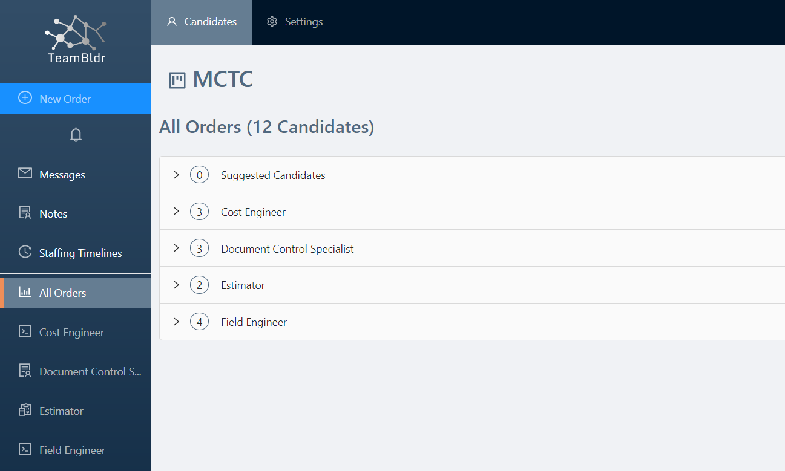
Sidebar Components
The sidebar is divided into the following sections:
Category Description Messages Displays relevant messages between candidates and clients Staffing Timelines Displays time table for which the client wants to hire All Orders Displays all candidate catergorization for all orders Orders Displays candidate categorization for a specific order
Messages
The messaging feature is intended to be a "direct" line of communication between the client and the candidate. Clients can ask candidate direct questions by clicking the "Ask" button on an individual candidate row:
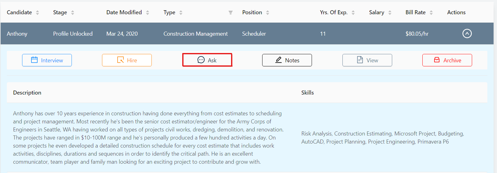
The button will prompt the following modal:
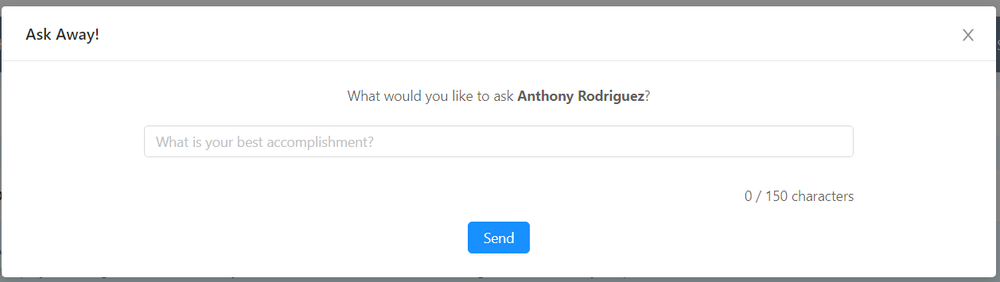
Upon clicking Send, the message will be sent to the candidate and the history of questions/responses will be appended to the Messages section:
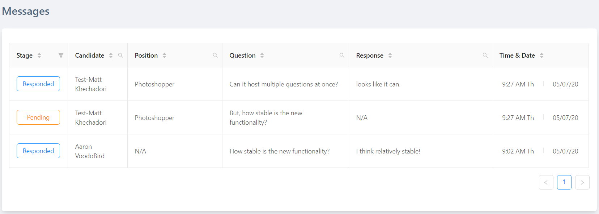
Notes
This section lists the history of any notes left by the client on the candidates:
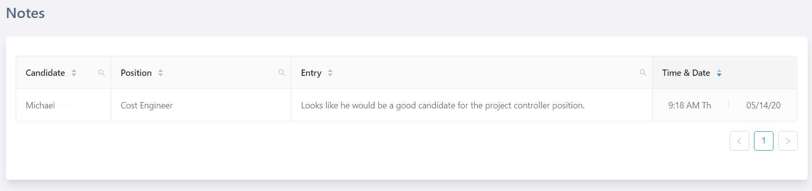
Please refer to the various actions for the candidate types to read further about the notes.
Staffing Timeline
This component is dedicated to creating a timeline for which the client wishes to hire. When entering the page for the first time, the client will be prompted to fill out his/her first timeline:
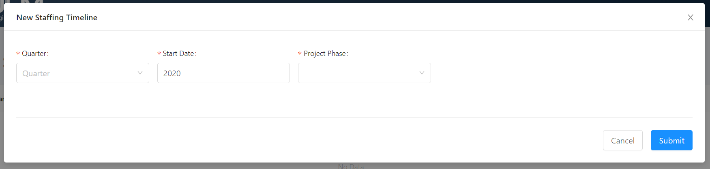
The required fields for the timeline are as follows:
Field Description Quarter Designated quarter for which the timeline will be set-up Start Date Date depicting when the hiring will start Project Phase The phase of the project for the hiring timeline
Upon pressing
Submit, the new timeline will be rendered on a table:
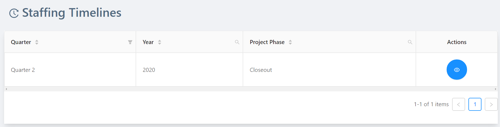
Clicking the Eye-icon will open a detailed modal for all the timelines created by the client:
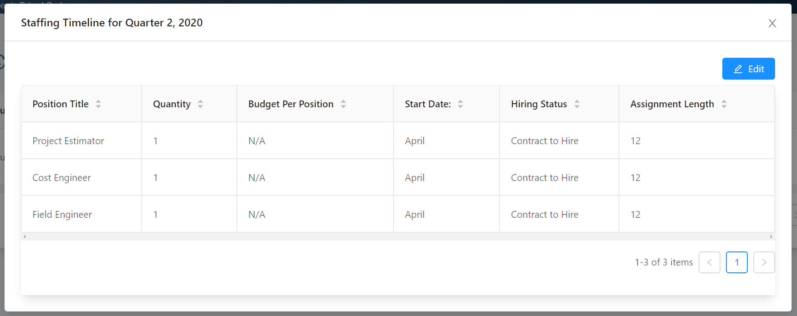
Clicking
Editwill allow the client to edit, add, or remove specific positions:
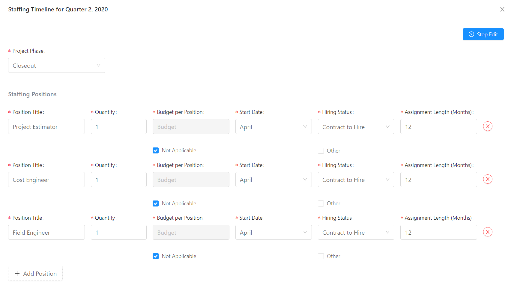
Orders
The orders display are broken down into two distinct ways of viewing:
- All Orders
- Single Order
All Orders consolidates all of the candidates and categories for each order and sum them up in a single page. One main distinction would be that the All Orders page include the
Suggestedcandidates section, which are candidates that do not belong to any particular order.The cadndiate categorization within each order consists of the following:
Category Description Pending Candidates that have been associated Scheduled Candidates whose interviews have been requested/scheduled Hired Candidates that have been hired/pending hire Saved Candidates that the client decided to save for later Archived Candidates that the client is not interested in Please refer to the respective sections for each of the categories.
Pending Candidates
The pending candidates represent the list of candidates that have been associated with the project/order and are pending action from the client:
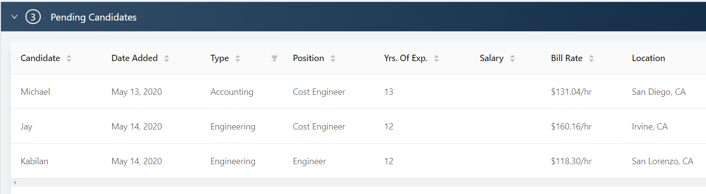
There are list of actions that become visible when any of the candidate rows are clicked:
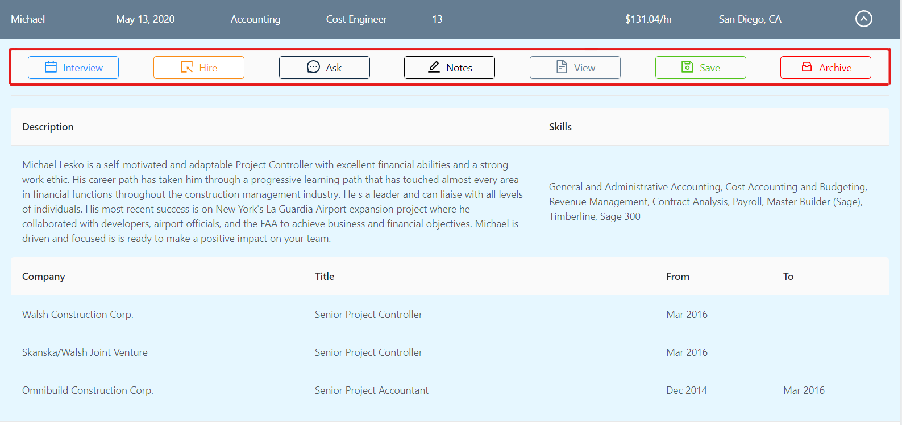
The possible actions include:
Action Description Interview Schedules an interview with the candidate and moves them to the Scheduled Interviews section Hire Hires the candidate and moves them to the Hired section Ask Allows client to prompt a question directly to the candidate. The history of candidate-client interaction will be saved in the Messages section Notes Allows the client to leave notes on the candidate View Loads the candidate's profile Save Keeps the candidate associated and moves them to the Saved section Archive Removes the candidate from interactivity and moves them to the Archived Candidates section
Schedule Interview Action
Pressing the
Interviewbutton opens the following modal:
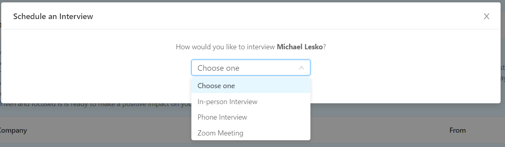
Selecting one of the interview types will dynamically generate the approrpriate form to accommodate the type of interview.
Regardless of the option selected, the following part of the form will always render:
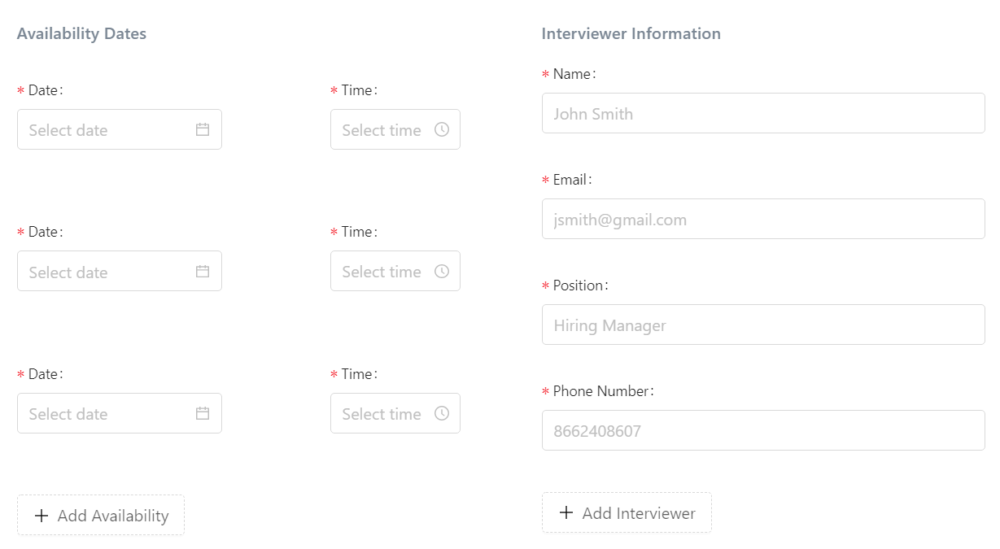
The main differences between the sections are highlighted as follows:
In-Person Interview
In-Person Interview option will render the location fields:
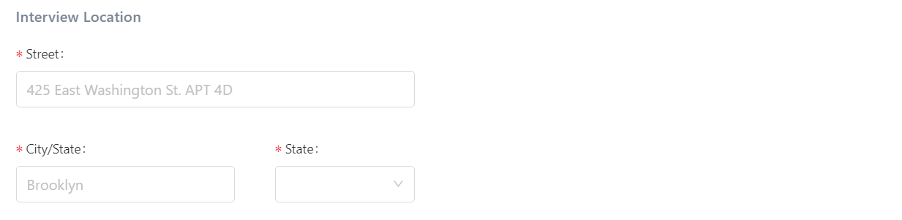
Phone Interview
In-Person Interview option will render the phone screen preference options:
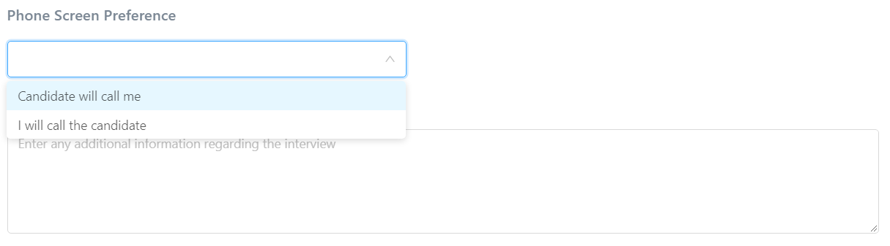
Zoom Interview
Zoom Interview option will only render the general interview form but it will make an API call to schedule a meeting through Zoom directly.
Through any of the above interview options, the candidate will receive the following view in their email:
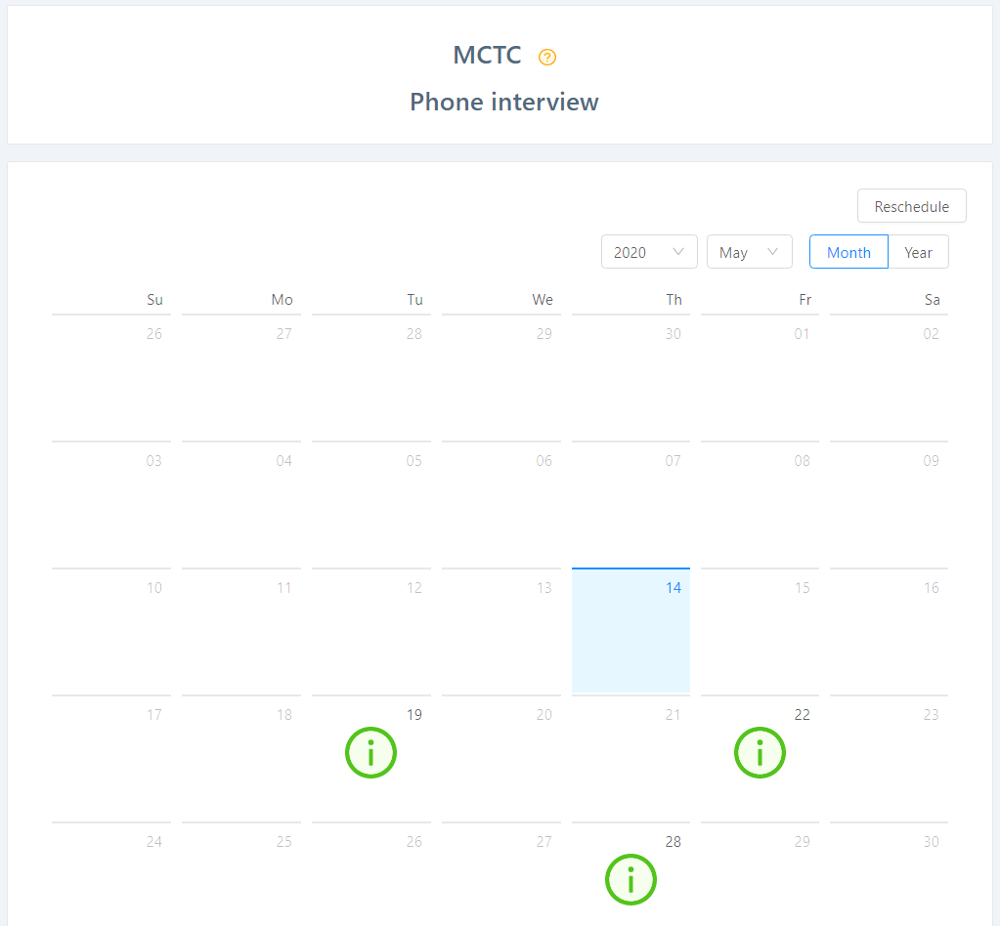
The (i) Icon indicates the date chosen by the client and the candidate will be prompted to select one of those times.
As shown in the image, there is a
Reschedulebutton which will prompt the client to choose a different time for the interview.
Hire Action
Pressing the
Hirebutton opens the following modal:
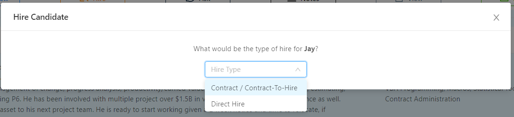
The fields dynamically render depending on the option chosen.
Contract / Contract-To-Hire
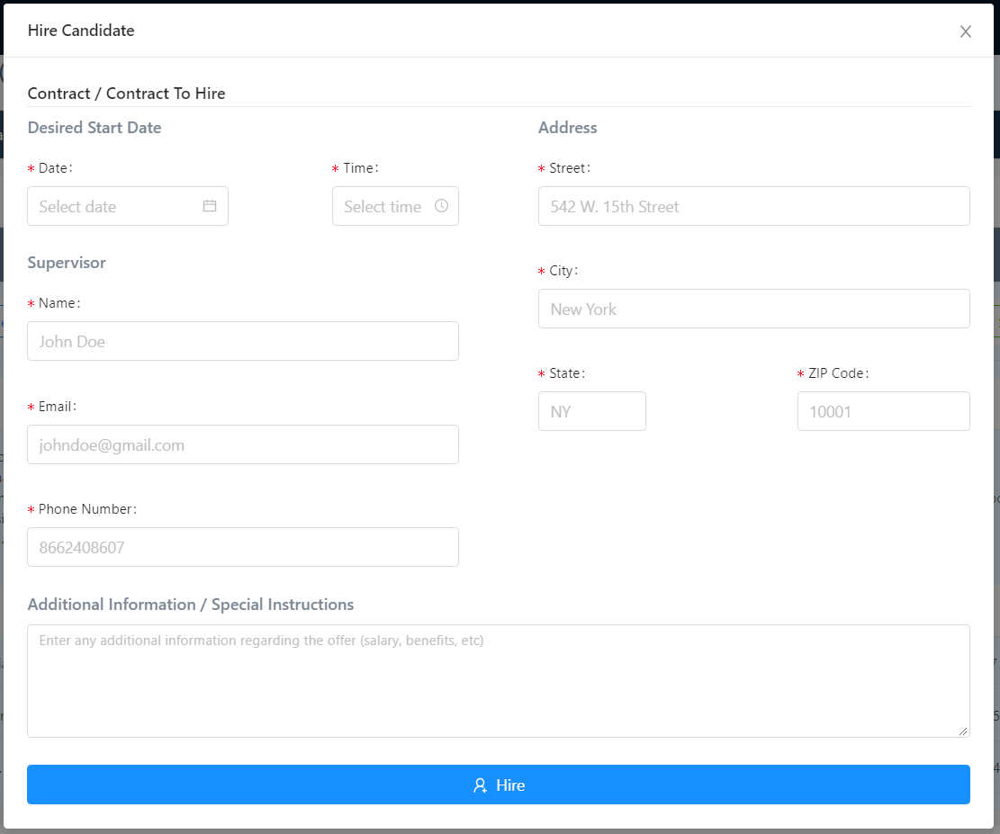
Direct Hire
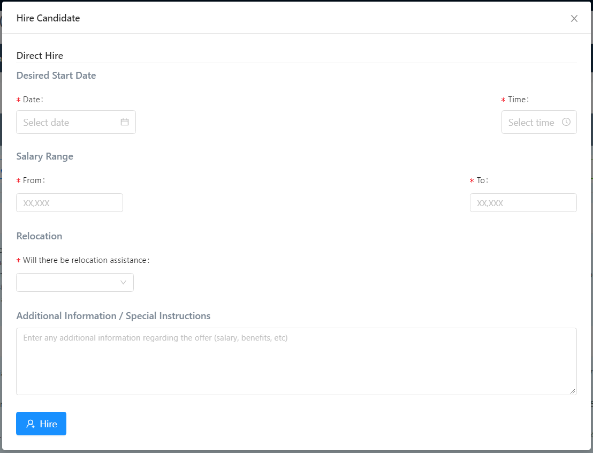
Ask Action
The
Askbutton prompts a modal that allows clients to directly ask questions to the selected candidate.
Please see the Messages section for how this action works.
Notes Action
The
Notesbuttton prompts a modal that allows clients to leave notes about the selected candidates
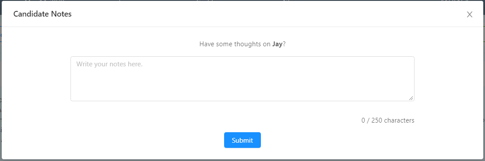
Upon writing the notes and clicking the
Submitbutton, the note will become available as part of the modal:
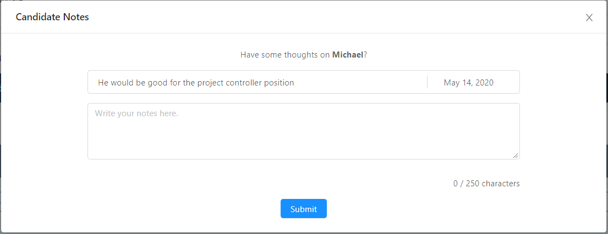
The note will also become visible in the Notes section.
View Action
This action loads the candidate's profile based on the candidate's various information within TeamBldr:
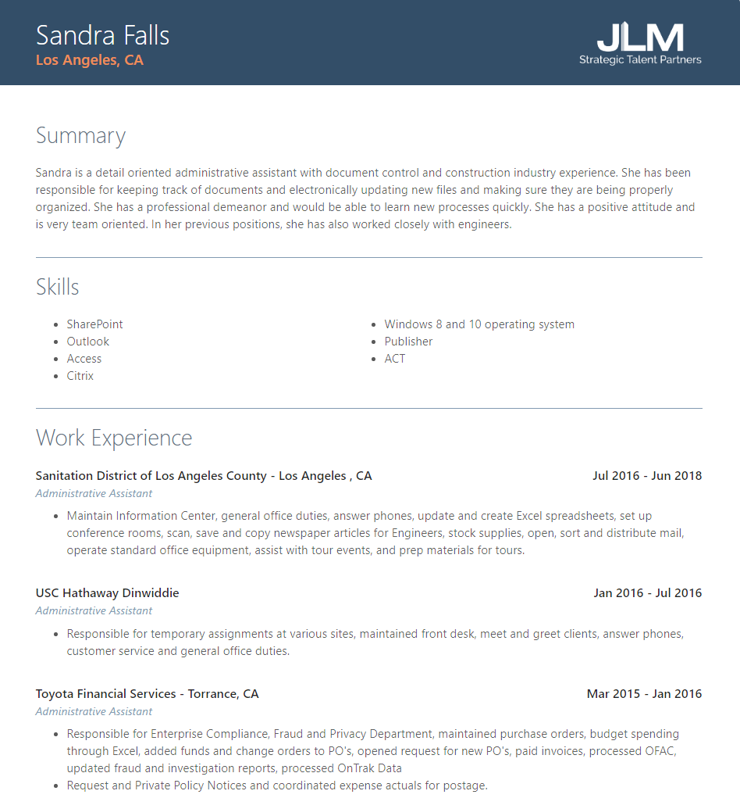
Save Action
This action indicates that the client is interested in the candidate, but not at this time. These candidates will be housed in the Saved Candidates section.
Archive Action
This action indicates that the client is not interested in the candidates. The action opens the following modal:
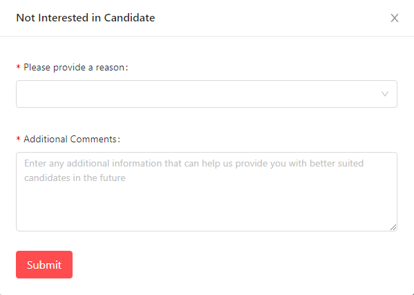
Initiating this action requires a reason for archiving and also prompts a textbox for additional comments.
Archive reasons are displayed as follows:
Field Not enough relevant experience Not enough years of experience Bill rate too high Missing certification Other
Upon submitting the form, the candidate is moved to the Archived Candidates section.
Scheduled Interviews
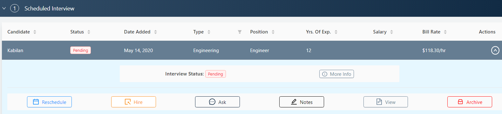
The candidates in the scheduled interviews mean that their interview have been scheduled or is pending confirmation on the interview.
The available actions within this section include:
Action Description More Info Loads additional information regarding the scheduled interview for the selected candidate Reschedule Re-prompts the same Schedule Interview action Hire Hires the candidate and moves them to the Hired section Ask Allows the client to ask questions directly to the candidate Notes Allows the client to ask questions directly to the candidate View Loads the candidate's profile Archive Removes the candidate from interactivity and moves them to the Archived Candidates section
The
Hire,View,Ask,NotesandArchiveactions are identical to the respective actions laid out above.
More Info Action
Clicking the
More Infoaction will open a side-tab that displays the following image:
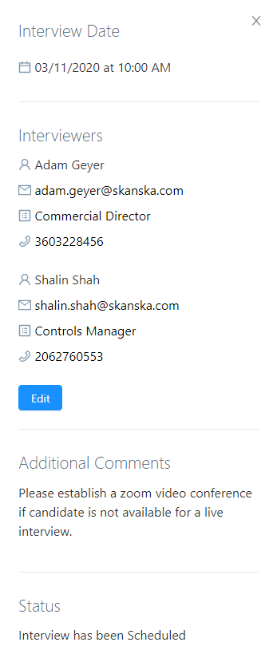
Note that the interviewers information can be edited, either to correct the information for the inputted interviewers or to add or remove any interviewers.
Reschedule Action
The
Rescheduleoption will have the same format and layout as theScheduleand will simply update the dates and information based on the new inputs.
Hired Candidates
This tab houses all the candidates that have been hired:
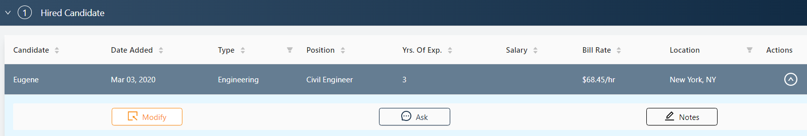
Clicking the
Modifybutton will open the same modal as the Hire Action and prompt the client to fill out different information for hiring.
Saved Candidates
This tab houses all the candidates that have been saved as a result of the Save For Later action.
The actions available are identical to those of the Pending Candidates section:
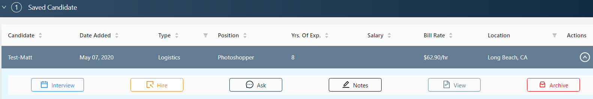
Archived Candidates
This tab houses all the candidates that have been archived as a result of the Archive action:
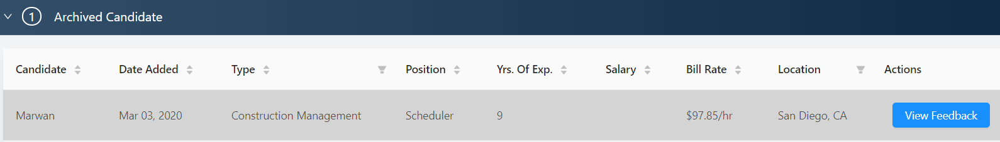
This tab has an additional field called
View Feedbackwhich displays the reason and comments related to the candidate's archival: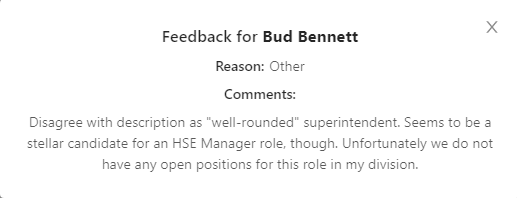
Orders
Ordersare specific positions that the clients want filled. They request an "order" from us and we attempt to fill them.Orders can be created by pressing the
New Orderbutton on top of the sidebar: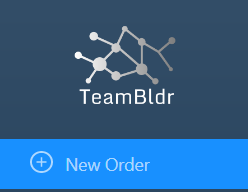
Clicking the button will take you to the order creation page:
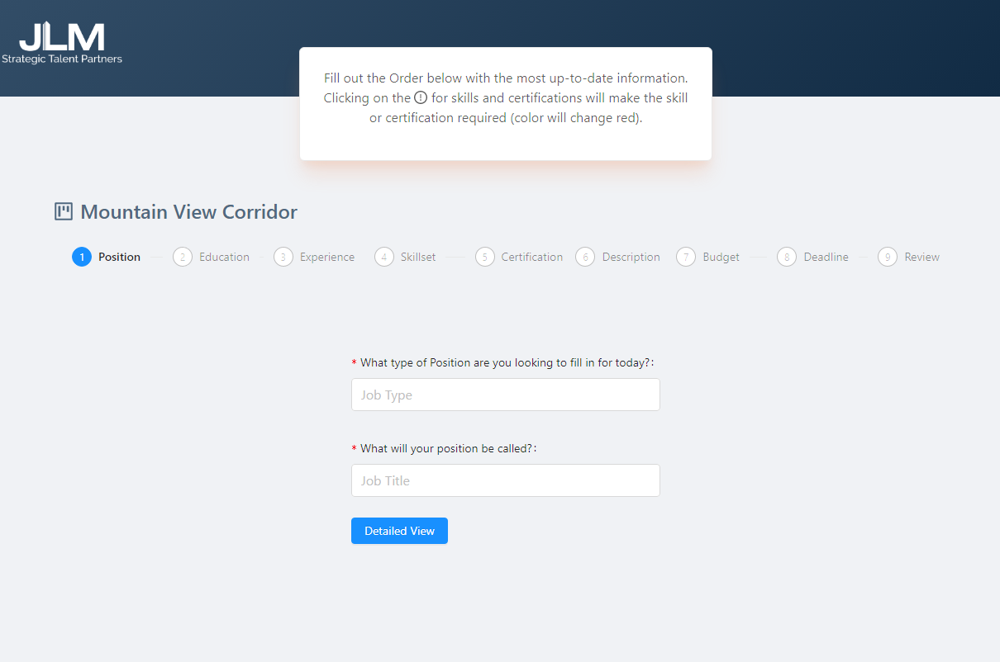
Although this is the default list-page, we recommend pressing the
Detailed Viewbutton at the bottom of the page. Doing so will navigate to the following page: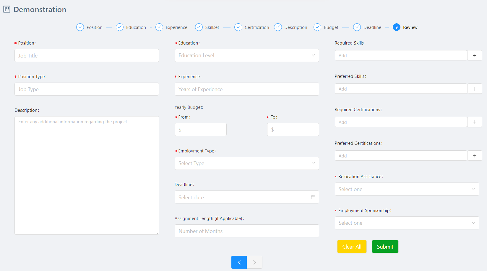
The available fields for creating an order are as follows:
Field Description Position Position Position Type Type of position Description General responsibilities and requirements Education Degree level desired Experience Years of experience Yearly Budget Yearly budget required Employment Type Type of project Deadline Due date for when the order should ideally be filled Assignment Length Duration of the position Required Skills List of skills required for the position Preferred Skills List of skills preferred for the position Required Certification List of certifications required for the position Preferred Certification List of certifications preferred for the position Note that filling in the position with one of the drop-down choices will auto-populate majority of the fields.
Once an order has been created, you can go through the same workflow as the sections highlighted in the general Client Dashboard section.
Edit
If you as an administrator or a client want to change the details of an order, going into that order on the client-side bar will now include a new top-option called
Order Details: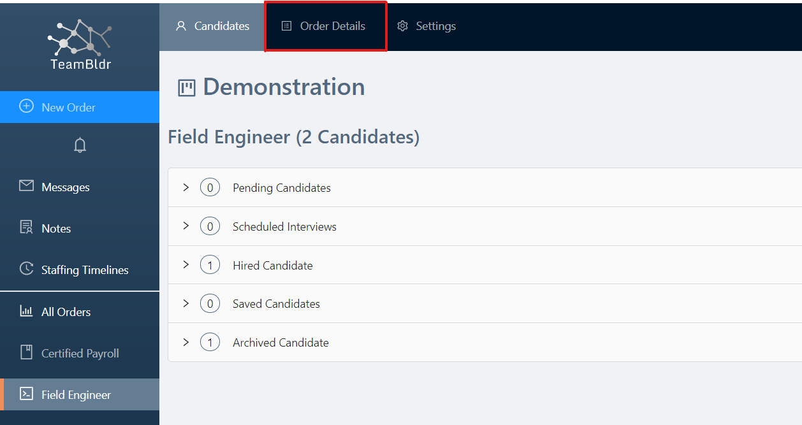
Clicking the button will navigate you to the following page:
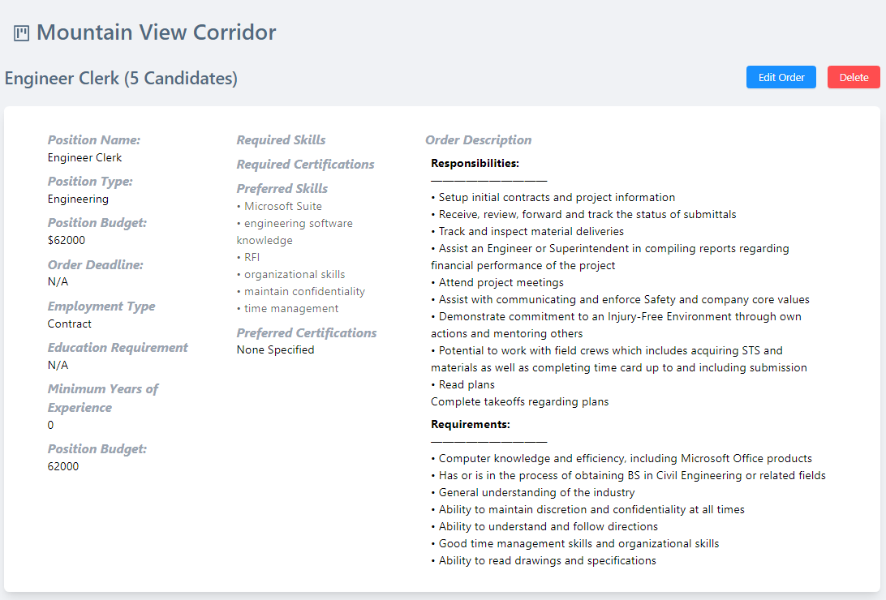
This is the page in which you can view as well as edit the order by pressing
Edit Orderbutton.